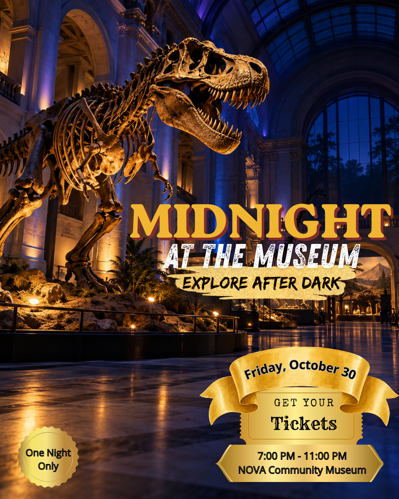
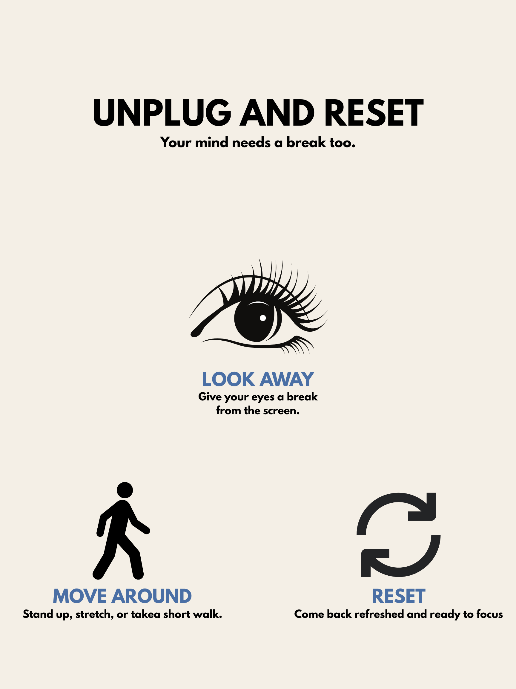

My Multimedia Creations
Explore my creative journey through original music, video storytelling, and digital artwork developed throughout my ITE 170 course.
Multimedia Showcase Video
A creative showcase bringing together my ITE 170 projects through music, digital imagery, and video editing in Canva.
My Multimedia Showcase Video
For my ITE 170 video project, I created a multimedia showcase highlighting my creative work from the semester. I wanted to tell a story about creativity, personal growth, and how different forms of media can work together. Using Canva, I combined images, music, and video editing to create a presentation that reflects the skills I developed throughout the course.
Creative Designs & Imagery
Explore my collection of AI-generated artwork, original posters, and creative designs from ITE 170. Click any image to view it in the gallery.

Midnight at the Museum – Promotional Poster Enchanted Forest – Digital Artwork
Enchanted Forest – Digital Artwork

Unplug and Reset – Wellness PosterChoosing Us – My Original Song
Discover Choosing Us, a song I created using Suno AI to explore emotional storytelling, creativity, and the connection between music and technology.
Choosing Us
Choosing Us is an original song I created using Suno AI for my ITE 170 multimedia course. I wanted to explore how music can express emotions and tell a meaningful story. Through this project, I learned how descriptive prompts can influence a song's mood, lyrics, and overall sound. Creating this song helped me understand how AI can be used as a creative tool to bring musical ideas to life.
"Choosing Us" was created using Suno (AI) for my ITE 170 multimedia course.
What I can do
Want to work together?
Send me a message about a project, a class or a question.